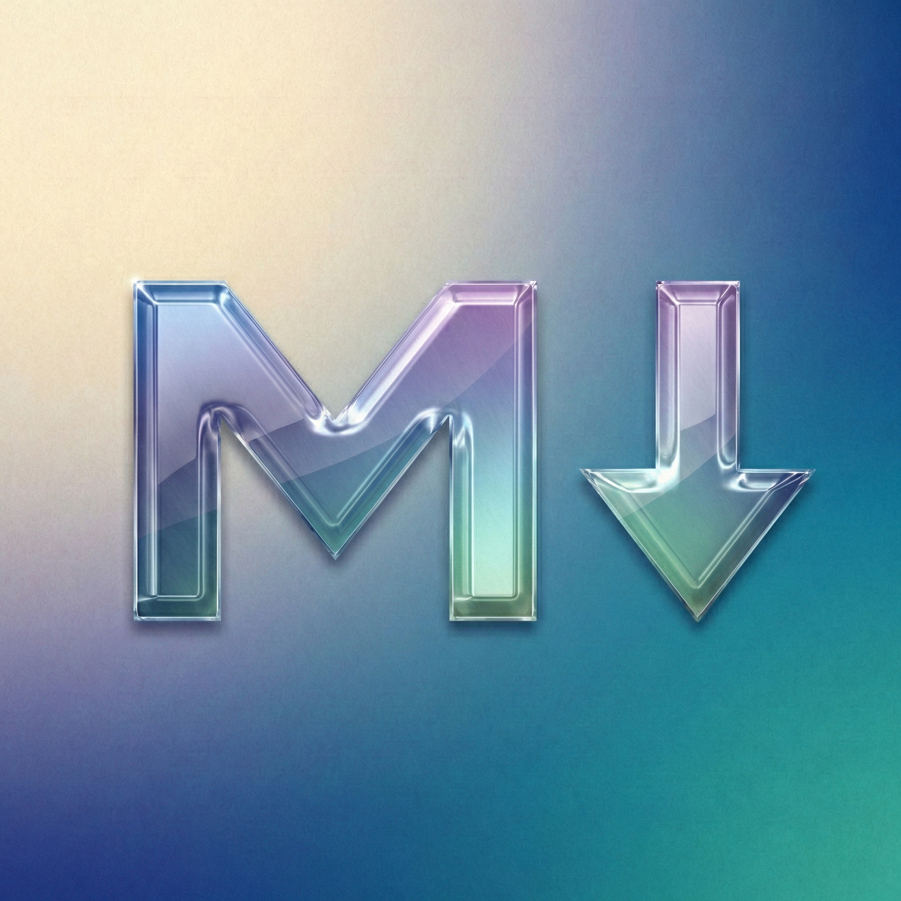
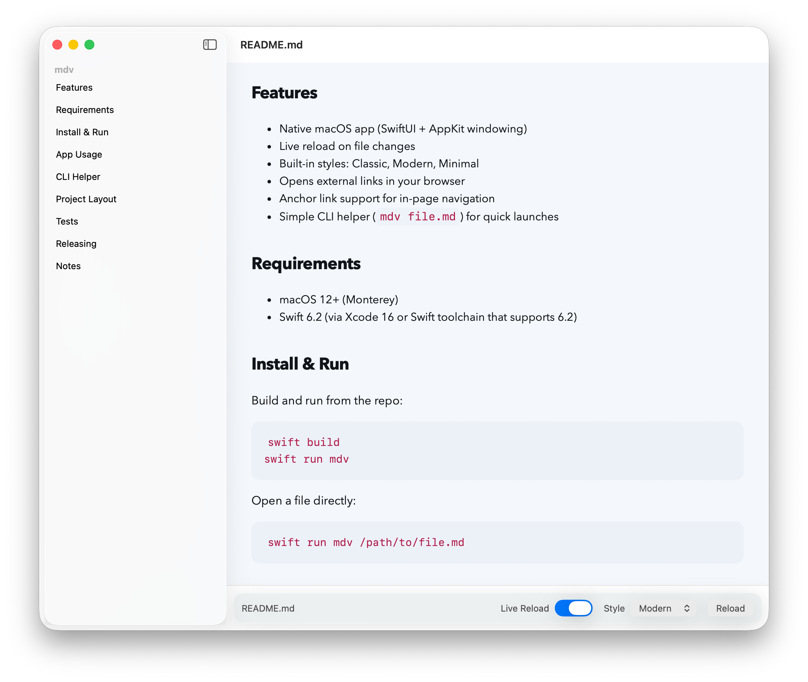

Live reload
Save in your editor, see it rendered instantly. mdv watches the file and refreshes the moment it changes.

mdv is a tiny, native macOS app that does one thing well: it renders your Markdown the moment you save it. No tabs, no toolbars, no accounts — just your words, set in type worth reading.

Save in your editor, see it rendered instantly. mdv watches the file and refreshes the moment it changes.
Classic serif, clean Modern, or bare Minimal — with adjustable type size, applied live to every window.
Long document? Every heading lands in a sidebar. One click scrolls you smoothly to the right section.
Install the helper once and mdv notes.md opens any file from Terminal, window front and center.
Native SwiftUI and AppKit. Drag & drop, Open Recent, dark mode, real menus — it behaves like it belongs.
Signed, notarized, and MIT-spirited. Read the code, file an issue, or build it yourself with one command.
“Open a file. Read it in style. That’s it.”
Download mdv